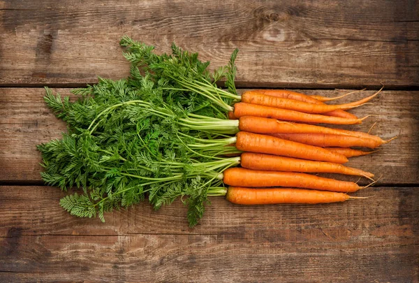
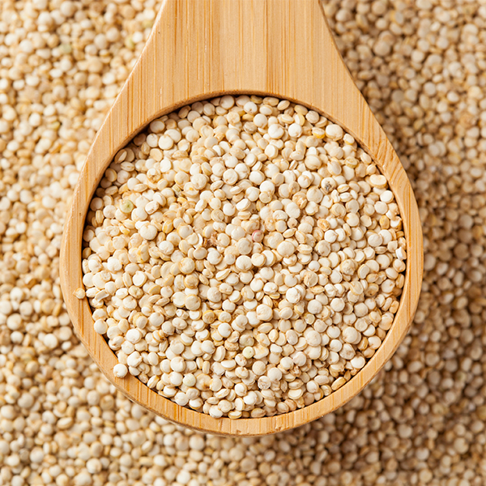

Manzanas Fuji
Manzanas Fuji crujientes y dulces, cultivadas en el Valle del Maule. Perfectas para meriendas saludables o como ingrediente en postres. Estas manzanas son conocidas por su textura firme y su sabor equilibrado entre dulce y ácido.

Naranjas Valencia
Jugosas y ricas en vitamina C, estas naranjas Valencia son ideales para zumos frescos y refrescantes. Cultivadas en condiciones climáticas óptimas que aseguran su dulzura y jugosidad.

Plátanos Cavendish
Plátanos maduros y dulces, perfectos para el desayuno o como snack energético. Estos plátanos son ricos en potasio y vitaminas, ideales para mantener una dieta equilibrada.

Zanahorias Orgánicas
Zanahorias crujientes cultivadas sin pesticidas en la Región de O'Higgins. Excelente fuente de vitamina A y fibra, ideales para ensaladas, jugos o como snack saludable.

Espinacas Frescas
Espinacas frescas y nutritivas, perfectas para ensaladas y batidos verdes. Estas espinacas son cultivadas bajo prácticas orgánicas que garantizan su calidad y valor nutricional.

Pimientos
Pimientos rojos, amarillos y verdes, ideales para salteados y platos coloridos. Ricos en antioxidantes y vitaminas, estos pimientos añaden un toque vibrante y saludable a cualquier receta.

Miel Orgánica
Miel pura y orgánica producida por apicultores locales. Rica en antioxidantes y con un sabor inigualable, perfecta para endulzar de manera natural tus comidas y bebidas.

Quinoa Orgánica
Cereal con alta proporción de proteínas y aminoácidos eseciales que favorecen su asimilación. Además, es rica en minerales esencial, como el hierro, magnesio, fósforo, manganeso, zinc, cobre y potasio. También es un aporte de vitamina B2 y B3.

Leche Entera
La leche entera es un importe aporte de nutrientes esenciales tales como el calcio, proteína de alta calidad biológica, vitaminas A, D y del complejo B.